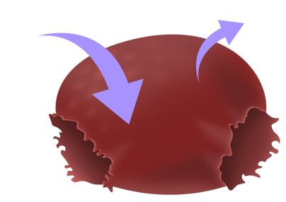
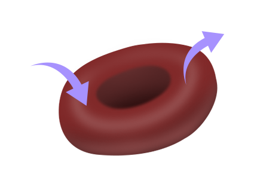
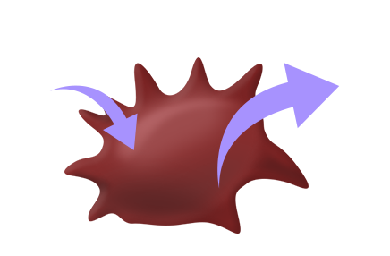
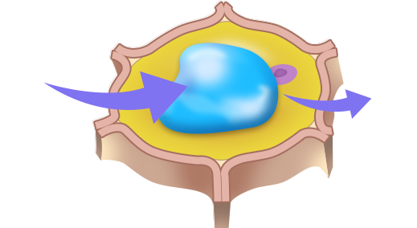
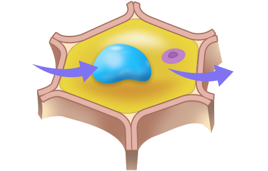
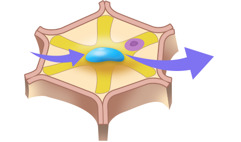

구분
농도가 낮은 용액
농도가 같은 용액
농도가 높은 용액
동물 세포
(적혈구)

세포 안으로 들어오는 물의 양이 많아
부풀어 오르다가 터질 수 있다.

세포 안팎으로 이동하는 물의 양이 같아
부피가 변하지 않는다.

세포 밖으로 빠져나가는 물의 양이 많아
쭈그러든다.
식물 세포

세포 안으로 들어오는 물의 양이 많아
세포가 팽팽해진다.

세포 안팎으로 이동하는 물의 양이 같아
부피가 변하지 않는다.

세포 밖으로 빠져나가는 물의 양이 많아
세포막과 세포벽이 분리된다.
세포막을 경계로 세포 안팎에 농도가 다른 용액이 있을 때에는 물 분자가 세포막을 통해
용질의 농도가 낮은 곳에서 높은 곳으로 이동하는 삼투가 일어난다.